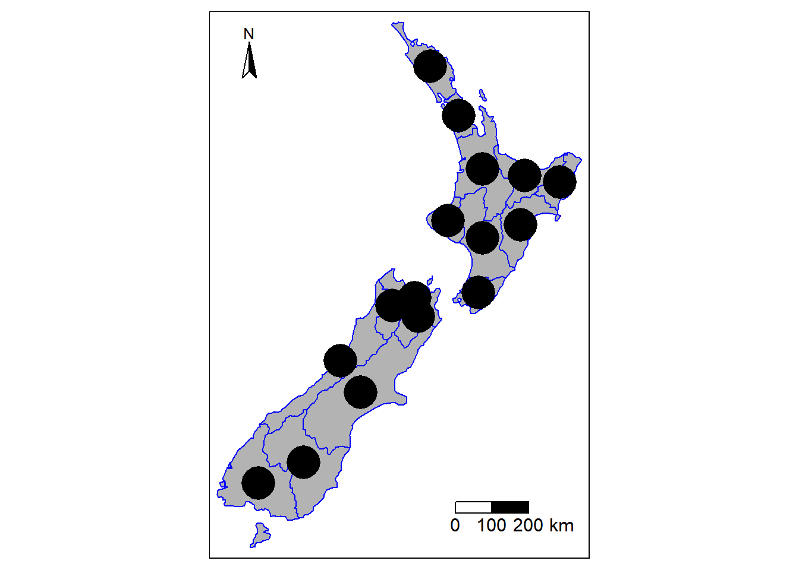

5 Adding additional information
Using and applying GIS techniques in R has become much easier since the additional functionality of Java-script libraries. One of these libraries in the leaflet library for mapping. Below are some examples of these mapping tools with examples.
I like the idea of know what to do in arcGIS so that it is easy to work with researchers that use either R or arcGIS. For a GIS map there are two main options. Here are the resources for building interactive and static maps in R using a range of different packages:
leaflettmap
5.0.1 Adding points
THere are quite a few datasets to combine here but the key aspect here is that we can do all of this semlessly with the data in a tidy format.
The datasets we are going to merge here are:
nzkml dataabunance data
5.0.1.1 Point locations (nz + kml data)
## -- Attaching packages ---------------------------------------------- tidyverse 1.2.1 --## v tibble 2.1.3 v purrr 0.3.2
## v tidyr 0.8.3 v stringr 1.4.0
## v readr 1.3.1 v forcats 0.4.0## -- Conflicts ------------------------------------------------- tidyverse_conflicts() --
## x tidyr::extract() masks raster::extract()
## x dplyr::filter() masks stats::filter()
## x kableExtra::group_rows() masks dplyr::group_rows()
## x dplyr::lag() masks stats::lag()
## x raster::select() masks dplyr::select()## Multiple layers are present in data source C:\Code\Creating-maps-in-R\data\invasive-species-NAH-research.kml, reading layer `Hollyford'.
## Use `st_layers' to list all layer names and their type in a data source.
## Set the `layer' argument in `st_read' to read a particular layer.## Warning in evalq((function (..., call. = TRUE, immediate. = FALSE,
## noBreaks. = FALSE, : automatically selected the first layer in a data
## source containing more than one.## Reading layer `Hollyford' from data source `C:\Code\Creating-maps-in-R\data\invasive-species-NAH-research.kml' using driver `KML'
## Simple feature collection with 10 features and 2 fields
## geometry type: GEOMETRY
## dimension: XYZ
## bbox: xmin: 167.9963 ymin: -45.06019 xmax: 168.1392 ymax: -44.70935
## epsg (SRID): 4326
## proj4string: +proj=longlat +datum=WGS84 +no_defs
## Observations: 10
## Variables: 3
## $ Name <fct> Gunns Camp, Choqenout and Ruscoe 2000, Hollyford V...
## $ Description <fct> "", "Eglinton Valley", "", "", "", "", "", "", "",...
## $ geometry <GEOMETRY [°]> POINT Z (168.1392 -44.76039 0), POINT Z (...| folder | name | description | styleUrl | longitude | latitude | altitude |
|---|---|---|---|---|---|---|
| Hollyford | Gunns Camp | NA | #icon-1899-0288D1-nodesc | 168.1392 | -44.76039 | 0 |
| Hollyford | Choqenout and Ruscoe 2000 | Eglinton Valley | #icon-1899-0288D1 | 167.9963 | -45.06019 | 0 |
| Hollyford | Hollyford Valley Lookout | NA | #icon-1899-0288D1-nodesc | 168.1050 | -44.80905 | 0 |
| Hollyford | Hollyford Airstrip | NA | #icon-1899-0288D1-nodesc | 168.1337 | -44.73744 | 0 |
| Hollyford | Point 9 | NA | #icon-1899-0288D1-nodesc | 168.1262 | -44.79766 | 0 |
| Hollyford | Point 10 | x = 10, y = 250 | #icon-1899-0288D1 | 168.0794 | -44.90247 | 0 |
| Eglinton Valley | MR1 | NA | #icon-1899-F9A825-nodesc | 168.0776 | -44.89081 | 0 |
| Eglinton Valley | M1 | NA | #icon-1899-FBC02D-nodesc | 168.1005 | -44.85371 | 0 |
| Eglinton Valley | M1 | NA | #icon-1899-FBC02D-nodesc | 168.0748 | -44.89257 | 0 |
| Eglinton Valley | R1 | NA | #icon-1899-000000-nodesc | 168.0968 | -44.85569 | 0 |
| Eglinton Valley | MR1 | NA | #icon-1899-FBC02D-nodesc | 168.0995 | -44.85768 | 0 |
| Eglinton Valley | R1 | NA | #icon-1899-000000-nodesc | 168.0789 | -44.89277 | 0 |
## Observations: 16
## Variables: 7
## $ Name <chr> "Northland", "Auckland", "Waikato", "Bay of Plen...
## $ Island <chr> "North", "North", "North", "North", "North", "No...
## $ Land_area <dbl> 12500.5611, 4941.5726, 23900.0364, 12071.1447, 8...
## $ Population <dbl> 175500, 1657200, 460100, 299900, 48500, 164000, ...
## $ Median_income <int> 23400, 29600, 27900, 26200, 24400, 26100, 29100,...
## $ Sex_ratio <dbl> 0.9424532, 0.9442858, 0.9520500, 0.9280391, 0.93...
## $ geom <MULTIPOLYGON [m]> MULTIPOLYGON (((1745493 600..., MUL...## Observations: 12
## Variables: 7
## $ folder <chr> "Hollyford", "Hollyford", "Hollyford", "Hollyford"...
## $ name <chr> "Gunns Camp", "Choqenout and Ruscoe 2000", "Hollyf...
## $ description <chr> NA, "Eglinton Valley", NA, NA, NA, "x = 10, y = 25...
## $ styleUrl <chr> "#icon-1899-0288D1-nodesc", "#icon-1899-0288D1", "...
## $ longitude <dbl> 168.1392, 167.9963, 168.1050, 168.1337, 168.1262, ...
## $ latitude <dbl> -44.76039, -45.06019, -44.80905, -44.73744, -44.79...
## $ altitude <dbl> 0, 0, 0, 0, 0, 0, 0, 0, 0, 0, 0, 0m.kat <- tidy.kat %>%
transmute(Name = folder,
Island = "South",
Land_area = NA,
Population = NA,
Sex_ratio = NA,
# geom = NA,
lat = latitude,
long = longitude,
alt = altitude)
plot.dat1 <- full_join(nz, m.kat)## Joining, by = c("Name", "Island", "Land_area", "Population", "Sex_ratio")## Observations: 28
## Variables: 10
## $ Name <chr> "Northland", "Auckland", "Waikato", "Bay of Plen...
## $ Island <chr> "North", "North", "North", "North", "North", "No...
## $ Land_area <lgl> TRUE, TRUE, TRUE, TRUE, TRUE, TRUE, TRUE, TRUE, ...
## $ Population <lgl> TRUE, TRUE, TRUE, TRUE, TRUE, TRUE, TRUE, TRUE, ...
## $ Median_income <int> 23400, 29600, 27900, 26200, 24400, 26100, 29100,...
## $ Sex_ratio <lgl> TRUE, TRUE, TRUE, TRUE, TRUE, TRUE, TRUE, TRUE, ...
## $ lat <dbl> NA, NA, NA, NA, NA, NA, NA, NA, NA, NA, NA, NA, ...
## $ long <dbl> NA, NA, NA, NA, NA, NA, NA, NA, NA, NA, NA, NA, ...
## $ alt <dbl> NA, NA, NA, NA, NA, NA, NA, NA, NA, NA, NA, NA, ...
## $ geom <MULTIPOLYGON [m]> MULTIPOLYGON (((1745493 600..., MUL...5.0.2 Plots
library(tmap)
tm_shape(plot.dat1) +
tm_fill(col = "black", alpha = 0.3) +
tm_borders(col = "blue") +
# tm_compass(type = "8star", position = c("left", "top")) +
tm_compass(type = "arrow", position = c("left", "top")) +
tm_scale_bar(breaks = c(0, 100, 200), text.size = 1) +
tm_dots(col = "black", size = 4)
## starting httpd help server ... doneIs it easier to work with polygons and centriod points as above??
5.1 coming
5.1.0.1 Abundance
## Parsed with column specification:
## cols(
## .default = col_character(),
## N = col_double(),
## se.N = col_double(),
## lcl.N = col_double(),
## ucl.N = col_double(),
## trip = col_double(),
## grid.n = col_double(),
## trip.no = col_double(),
## year = col_double(),
## cum.seed = col_double(),
## seed.account.N = col_double(),
## log.seed = col_double(),
## true.date = col_date(format = "")
## )## See spec(...) for full column specifications.## Observations: 144
## Variables: 26
## $ N <dbl> 85.185920, 141.346453, 125.542907, 23.769273, 8...
## $ se.N <dbl> 17.258336, 24.813696, 15.717429, 1.661358, 18.5...
## $ lcl.N <dbl> 53, 103, 100, 22, 57, 88, 93, 25, 13, 0, 1, 1, ...
## $ ucl.N <dbl> 114, 200, 162, 28, 125, 179, 164, 43, 26, 5, 5,...
## $ var <chr> "N[1,1]", "N[2,1]", "N[3,1]", "N[4,1]", "N[5,1]...
## $ grid <chr> "egl M1", "egl M1", "egl M1", "egl M1", "egl M1...
## $ trip <dbl> 1, 2, 3, 4, 5, 6, 7, 8, 9, 10, 11, 12, 13, 14, ...
## $ grid.n <dbl> 1, 1, 1, 1, 1, 1, 1, 1, 1, 1, 1, 1, 1, 1, 1, 1,...
## $ trip.no <dbl> 1, 2, 3, 4, 5, 6, 7, 8, 9, 10, 11, 12, 13, 14, ...
## $ valley <chr> "egl", "egl", "egl", "egl", "egl", "egl", "egl"...
## $ control <chr> "control", "control", "control", "control", "co...
## $ Valley <chr> "egl", "egl", "egl", "egl", "egl", "egl", "egl"...
## $ year <dbl> 1999, 1999, 1999, 2000, 2000, 2000, 2000, 2001,...
## $ month <chr> "May", "Aug", "Nov", "Feb", "May", "Aug", "Nov"...
## $ cum.seed <dbl> 590.781767, 621.339445, 631.525337, 20.371785, ...
## $ seed.account.N <dbl> 6.9352044, 4.3958616, 5.0303546, 0.8570639, 14....
## $ log.seed <dbl> 2.7714271, 2.7933289, 2.8003908, 1.3090291, 3.1...
## $ valley.rep <chr> "egl", "egl", "egl", "egl", "egl", "egl", "egl"...
## $ grid.rats <chr> "M1", "M1", "M1", "M1", "M1", "M1", "M1", "M1",...
## $ Conditions <chr> "rats.removed", "rats.removed", "rats.removed",...
## $ grouping.1 <chr> "treat.highN", "treat.highN", "treat.highN", "t...
## $ grouping.2 <chr> "treat.highN", "treat.highN", "treat.highN", "t...
## $ grouping.3 <chr> "treat.highN", "treat.highN", "treat.highN", "t...
## $ grouping.4 <chr> "treat.highN", "treat.highN", "treat.highN", "t...
## $ true.date <date> 1999-05-01, 1999-08-01, 1999-11-01, 2000-02-01...
## $ treat.six <chr> "egl control rats.removed", "egl control rats.r...